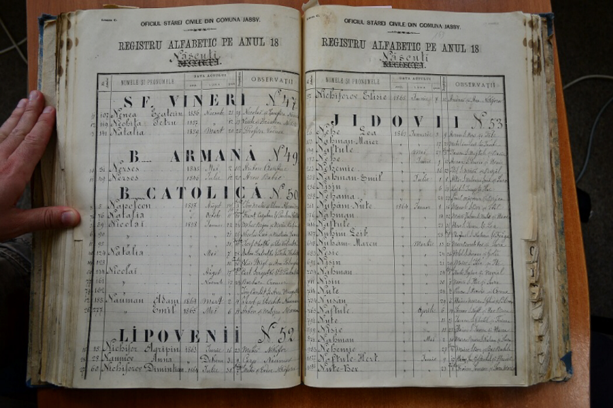
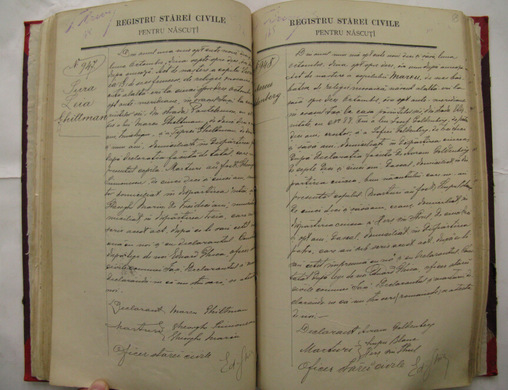
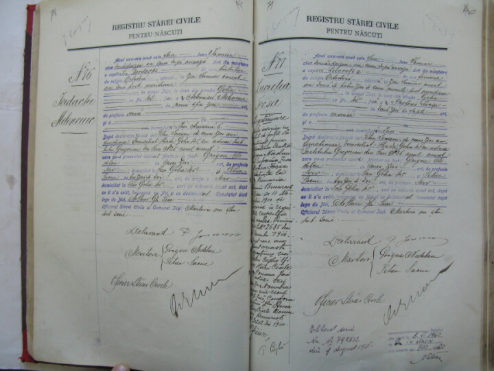
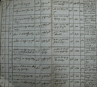
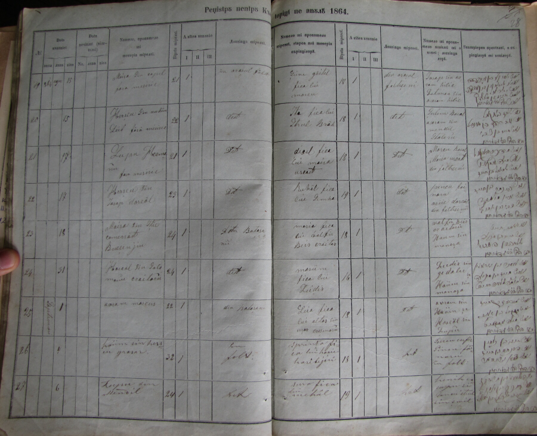
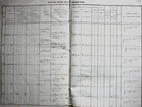
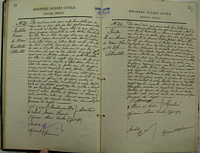
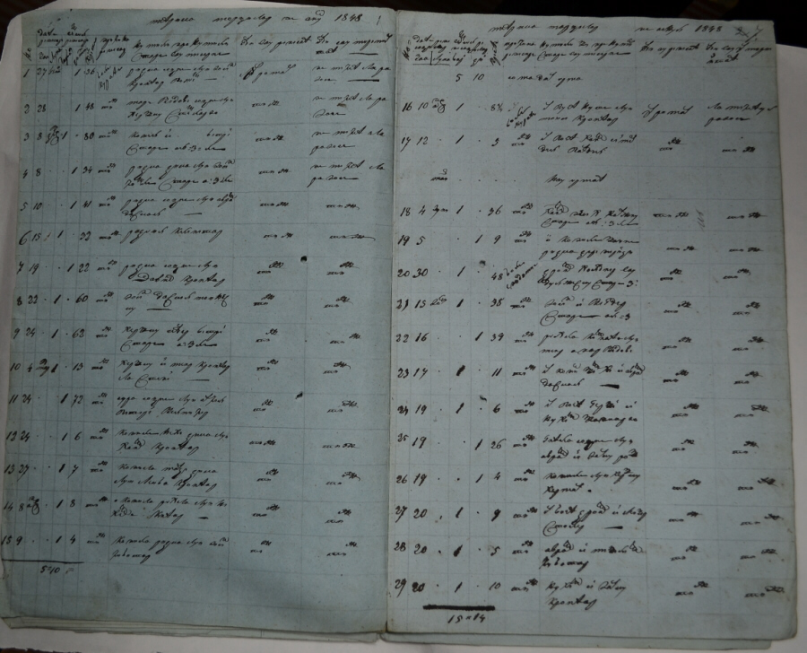

Moldavia Vital Records Database
This database includes birth, marriage, death and occasional divorce
records from the Moldavia region of Romania.
It includes the present modern counties (judeţe) of
Bacău, Galaţi, Iaşi, Neamş, Vaslui, and Vrancea.
The original records are at the Iaşi County National Archives
branch (Direcţia Judeţeană Iaşi a Arhivelor
Naţionale) of the National Archives of Romania
(Arhivele Naţionale ale României).
Before 1866 the records were kept by the religious authorities, and
starting in 1866 they were kept by the civil authorities.
Most of the records are in Romanian.
They are for genealogical research only.
A few records were obtained from the
LDS Family History Library.
As of January 2020, this database currently contains over 14,730records —
those records where the charts below show the number of Jewish records.
The vast majority of the records are from the city of Iaşi,
with some records from Bicaz, Botoşani, Dorohoi, Fălticeni,
Hârlău, Herţa, Lespezi, Paşcani and Podu Iloaiei.
The charts will be updated as we get more records from Romania.
Dorohoi and Herţa were formerly in Dorohoi County in the
Moldavia Region of Romania.
Dorohoi is now in Botoșani County in the Moldavia Region.
Herţa is now Hertsa in Ukraine, and the records are located in
the Chernivtsi State Archive.
Birth Records
The Register of Births records may contain the following information:
- Register number or FHL film number and Item number on film
- Page number of the register
- Place recorded
- Year of registration
- Record number
- Surname
- Given name
- Father
- Age of father
- Paternal grandfather
- Paternal grandmother
- Mother
- Age of mother
- Maternal grandfather
- Maternal grandmother
- Mother's maiden name
- Day, month, year of birth according to the Julian calendar
- Place of birth
- Person who was the declarent
- Comments which may include the occupation of the father;
mother's status and marriage thereby legitimizing the child;
or where the family lived.
- The archive where the records are located along with the
register number, type of record and record number
Illustrations of sample pages of the birth registers.
Click on each image for a larger view.
|
 |
Alphabetical register of births by churches.
The Jewish births are on the right page.
Other religions are on the left page in this example.
The oldest records shown is for 1863 for a Jewish birth and
1845 for a non Jewish birth on this page.
There are a few Jewish births in the register as early as 1862. |
|
 |
Typical birth records after 1866
The birth record on the left is for the mother of Rom-Sig coordinator,
Bob Wascou Z'L, from 1896.
Other volunteers have also found family records. |
|
 |
Post 1905 birth records
Starting towards the end of 1905 in Iaşi, clerks began to use
"fill-in-the-blank" type forms in an effort to standardize
reporting. However, not all towns used these forms. |
|
Birth Records
|
| Town |
Year |
Register number
or
FHL film # / Item # |
Zone |
# of
records |
# of
Jewish
records
online |
% of
Jewish
records |
Comments |
| Bicaz | 1864 | 2 | - | 19 | 19 | 100% | Jewish Register |
| Bicaz | 1865 | 3 | - | 15 | 15 | 100% | Jewish Register |
| Botoșani | 1849 | 79 | - |
| | | Jewish Register |
| Botoșani | 1857 | 152 | - | 348 |
| | Jewish Register |
| Botoșani | 1858 | 163 | - |
| | | Jewish Register |
| Botoșani | 1860 | 207 | - |
| | | Jewish Register |
| Botoșani | 1896 | 1, 2, 3, 4 | - | 1246 |
| | |
| Botoșani | 1897 | 9, 10, 11 | - | 1194 |
| | Only record # 399-793 |
| Burdujeni | 1859 |
| - |
| | | Jewish Register |
| Burdujeni | 1860 |
| - |
| | | Jewish Register |
| Burdujeni | 1861 | 2 | - |
| | | Jewish Register |
| Burdujeni | 1863 | 3 | - | 15 | 15 | 100% | Jewish Register |
| Burdujeni | 1864 | 4 | - | 22 | 22 | 100% | Jewish Register |
| Burdujeni | 1865 | 5 | - | 22 | 22 | 100% | Jewish Register |
| Dorohoi | 1896 | 1, 2 | - | 591 | 363 | 61% |
|
| Dorohoi | 1897 | 4, 5 | - | 533 | 311 | 58% |
|
| Dorohoi | 1898 | 7, 8 | - | 489 | 301 | 61% |
|
| Dorohoi | 1899 | 10 | - | 394 | 229 | 58% |
|
| Fălticeni | 1862 | 1 |
- | 195 | 195 | 100% | Jewish Register |
| Fălticeni | 1864 | 2 |
- | 229 | 229 | 100% | Jewish Register |
| Herţa | 1867 | 2329599 item 2 | - | 142 |
| |
|
| Herţa | 1868 | 2329599 item 2 | - |
| | | |
| Herţa | 1869 | 2329599 item 2 | - |
| | | |
| Herţa | 1870 | 2329599 item 2 | - |
| | | |
| Herţa | 1871 | 2329599 item 2 | - |
| | | |
| Herţa | 1872 | 2329599 item 2 | - |
| | | |
| Herţa | 1873 | 2329599 item 2 | - |
| | | |
| Herţa | 1874 | 2329599 item 2 | - |
| | | |
| Herţa | 1875 | 2329599 item 3 | - |
| | | |
| Herţa | 1876 | 2329599 item 3 | - |
| | | |
| Herţa | 1877 | 2329599 item 4 | - | 79 | 58 | 73% |
Records 1 & 2 are missing |
| Herţa | 1878 | 2329599 item 4 | - |
| | | |
| Herţa | 1879 | 2329599 item 4 | - | 140 |
| | |
| Herţa | 1880 | 2329599 item 4 | - |
| 3 |
| |
| Herţa | 1881 | 2329599 item 4 | - |
| | | |
| Herţa | 1882 | 2329599 item 4 | - | 127 |
| | |
| Herţa | 1883 | 2329599 item 4 | - | 117 | 80 | 68% |
|
| Herţa | 1883 | 2329600 item 1 | - |
| | | |
| Herţa | 1884 | 2329600 item 1 |
- | 114 | 97 | 85% |
|
| Herţa | 1885 | 2329600 item 2 |
- |
| | | |
| Herţa | 1886 | 2329600 item 2 |
- |
| | | |
| Herţa | 1887 | 2329600 item 2 |
- |
| | | |
| Herţa | 1888 | 2329600 item 2 |
- | 113 |
| | Records 1 & 2 are missing |
| Herţa | 1889 | 2329600 item 2 |
- | 125 |
| | Records 1 to 6 are missing |
| Herţa | 1890 | 2329600 item 2 |
- | 136 |
| | |
| Herţa | 1891 | 2329600 item 2 |
- | 106 |
| | |
| Herţa | 1892 | 2329600 item 2 |
- | 103 |
| | |
| Herţa | 1893 | 2329600 item 2 | - |
| | | |
| Herţa | 1893 | 2329600 item 3 | - |
| | | |
| Herţa | 1894 | 2329600 item 3 | - |
| | | |
| Herţa | 1895 | 2329600 item 3 | - |
| | | |
| Herţa | 1896 | 2329600 item 3 | - |
| | | |
| Herţa | 1897 | 2329600 item 3 | - |
| | | |
| Herţa | 1898 | 2329600 item 3 | - |
| | | |
| Herţa | 1899 | 2329600 item 3 | - |
| | | |
| Herţa | 1900 | 2329600 item 3 | - |
| | | |
| Herţa | 1900 | 2329600 item 4 | - |
| | | |
| Herţa | 1901 | 2329600 item 3 | - |
| | | |
| Herţa | 1901 | 2329600 item 4 | - |
| | | |
| Herţa | 1901 | 2329601 item 1 | - |
| | | |
| Herţa | 1902 | 2329601 item 4 | - |
| 33 |
| |
| Hârlău | 1865-6 | 1 | - | 157 | 76 | 48% |
|
| Hârlău | 1867 | 1, 3 | - | 188 | 104 | 55% |
|
| Hârlău | 1868 | 1, 3 | - | 167 | 83 | 49% |
|
| Hârlău | 1869 | 1, 3, 5 | - | 198 | 96 | 48% |
|
| Hârlău | 1870 | 1, 3, 5 | - | 206 | 111 | 53% |
|
| Hârlău | 1871 | 1, 2 | - | 196 | 112 | 57% |
|
| Hârlău | 1872 | 1, 3 | - | 191 | 109 | 57% |
|
| Hârlău | 1873 | 1, 3 | - | 157 | 98 | 62% |
|
| Hârlău | 1874 | 1, 3 | - | 176 | 106 | 60% |
|
| Hârlău | 1875 | 1, 3 | - | 195 | 108 | 55% |
|
| Hârlău | 1876 | 1, 3 | - | 168 | 101 | 60% |
|
| Hârlău | 1877 | 1 | - | 197 | 106 | 53% |
|
| Hârlău | 1878 | 1 | - | 174 | 96 | 55% |
|
| Hârlău | 1879 | 1 | - | 163 | 92 | 56% |
|
| Hârlău | 1880 | 1 | - | 172 | 101 | 58% |
|
| Hârlău | 1881 | 1 | - | 171 | 96 | 56% |
|
| Hârlău | 1882 | 1 | - | 168 | 97 | 57% |
|
| Hârlău | 1883 | 1 | - | 189 | 117 | 61% |
|
| Hârlău | 1884 | 1 | - | 180 | 109 | 60% |
|
| Hârlău | 1885 | 1 | - | 189 | 108 | 57% |
|
| Hârlău | 1886 | 1 | - | 189 | 102 | 54% |
|
| Hârlău | 1887 | 1 | - | 197 | 122 | 61% |
|
| Hârlău | 1888 | 1 | - | 175 | 92 | 52% |
|
| Hârlău | 1889 | 1 | - | 183 | 104 | 56% |
|
| Hârlău | 1890 | 1 | - | 172 | 97 | 56% |
|
| Hârlău | 1891 | 1 | - | 176 |
| | |
| Hârlău | 1892 | 1 | - | 150 |
| | |
| Hârlău | 1893 | 1 | - | 199 |
| | |
| Hârlău | 1894 | 1 | - | 180 |
| | |
| Hârlău | 1895 | 1 | - | 196 |
| | |
| Hârlău | 1896 | 1 | - | 200 |
| | |
| Hârlău | 1897 | 1 | - | 193 |
| | |
| Hârlău | 1898 | 1 | - | 175 |
| | |
| Hârlău | 1899 | 1 | - | 171 |
| | |
| Hârlău | 1900 | 1 | - | 164 |
| | |
| Hârlău | 1901 | 1 | - | 154 |
| | |
| Hârlău | 1902 | 1 | - | 163 |
| | |
| Hârlău | 1903 | 1 | - | 156 |
| | |
| Hârlău | 1904 | 1 | - | 156 |
| | |
| Hârlău | 1905 | 1 | - | 157 |
| | |
| Hârlău | 1906 | 1 | - | 160 |
| | |
| Hârlău | 1907 | 1 | - | 150 |
| | |
| Hârlău | 1908 | 1 | - | 167 |
| | |
| Iaşi | 1862 | 614 | - | 16 | 16 | 100% |
1832-1865 alphabetic matrices of churches in Iaşi (Jewish Records) |
| Iaşi | 1863 | 614 | - | 288 | 288 | 100% |
1832-1865 alphabetic matrices of churches in Iaşi (Jewish Records) |
| Iaşi | 1864 | 614 | - | 1601 | 1601 | 100% |
1832-1865 alphabetic matrices of churches in Iaşi (Jewish Records) |
| Iaşi | 1865 | 614 | - | 565 | 565 | 100% |
1832-1865 alphabetic matrices of churches in Iaşi (Jewish Records) |
| Iaşi | 1865-1866 | 1 | I, II, III | 480 |
| | |
| Iaşi | 1865-1866 | 2, Volumes I, II | II, III, IV | 502 |
| | |
| Iaşi | 1865-1866 | 3 | IV-V | 482 |
| | |
| Iaşi | 1866 | 1, 2, 3, 4 | I, III | 486 |
| | |
| Iaşi | 1866 | 11, 12, 13, | I, II, IV | 482 |
| | |
| Iaşi | 1866 | 17, 18, 19, 20 | IV, V | 494 |
| | |
| Iaşi | 1867 | 2, 4, 6, 8 | I, II | 852 |
| | |
| Iaşi | 1867 | 10, 12, 14, 16 | III | 737 |
| | |
| Iaşi | 1867 | 18, 20, 22, 24, 25, 27, 29 | IV, V | 1311 |
| | |
| Iaşi | 1868 | 2, 4, 6, 8, 10 | I, II | 861 |
| | |
| Iaşi | 1868 | 10, 11, 14, 16, 18 | III | 796 |
| | |
| Iaşi | 1868 | 20, 22, 23, 26, 28, 30, 32 | IV, V | 1275 |
| | |
| Iaşi | 1869 | 1, 3, 5, 7, 9, 11 | I, II | 811 |
| | |
| Iaşi | 1869 | 13, 15, 17, 19, 21 | III | 722 |
| | |
| Iaşi | 1869 | 23, 25, 27, 29, 31, 33 | IV, V | 966 |
| | |
| Iaşi | 1870 | 2, 4, 6, 8, 10 | I, II | 883 |
| | |
| Iaşi | 1870 | 11, 12, 13, 14 | III | 759 |
| | |
| Iaşi | 1870 | 20, 22, 23, 26, 28, 30, 32 | IV, V | 1338 |
| | |
| Iaşi | 1871 | 2, 4, 6, 8, 10 | I, II | 901 |
| | |
| Iaşi | 1871 | 11, 13, 16, 18 | III | 796 |
| | |
| Iaşi | 1871 | 19, 22, 23, 26, 28, 29, 31 | IV, V | 1348 |
| | |
| Iaşi | 1872 | 2, 4, 6, 8, 10 | I, II | 863 |
| | |
| Iaşi | 1872 | 11, 12, 13, 14 | III | 752 |
| | |
| Iaşi | 1872 | 19, 20, 21, 22, 23, 24, 25 | IV, V | 1250 |
| | |
| Iaşi | 1873 | 1, 4, 5, 8, 10 | I, II | 879 |
| | |
| Iaşi | 1873 | 15, 16, 17, 18 | III | 689 |
| | |
| Iaşi | 1873 | 19, 20, 21, 22, 23, 24 25 | IV, V | 1286 |
| | |
| Iaşi | 1874 | 2, 4, 5, 8, 10 | I, II | 879 |
| | |
| Iaşi | 1874 | 12, 14, 15,17 | III | 687 |
| | |
| Iaşi | 1874 | 18, 20, 22, 24, 26, 27,30 | IV, V | 1246 |
| | |
| Iaşi | 1875 | 2, 4, 6, 8, 9 | I, II | 877 |
| | |
| Iaşi | 1875 | 12, 14, 16, 18, 20 | III | 860 |
| | |
| Iaşi | 1875 | 22, 24, 26, 28, 30, 31, 33 | IV, V | 1354 |
| | |
| Iaşi | 1876 | 2, 4, 6, 8, 9 | I, II | 905 |
| | |
| Iaşi | 1876 | 12, 14, 16, 18, 20 | III | 889 |
| | |
| Iaşi | 1876 | 22, 24, 26, 28, 30, 31 33 | IV, V | 1242 |
| | |
| Iaşi | 1877 | 2, 4, 6, 7, 9, 11, 13, 16, 17 | I, II, III | 1612 |
| | |
| Iaşi | 1877 | 20, 22, 23, 26, 28, 30 | IV, V | 1107 |
| | |
| Iaşi | 1878 | 2, 4, 6, 8, 9, 11, 14, 15 | I, II, III | 1529 |
| | |
| Iaşi | 1878 | 17, 20, 22, 24, 26, 28, 30 | IV, V | 1172 |
| | |
| Iaşi | 1879 | 2, 4, 6, 8,9, 11,14, 16 | I, II, III | 1573 |
| | |
| Iaşi | 1879 | 17, 20, 22, 23, 27, 30 | IV, V | 1206 |
| | |
| Iaşi | 1880 | 2, 4, 5, 8, 9, 12,13,16,18 | I, II, III | 1614 |
| | |
| Iaşi | 1880 | 20, 21, 23, 26, 27, 30 | IV, V | 1112 |
| | |
| Iaşi | 1881 | 1, 4, 6, 8, 9, 12,14, 16, 17, 19 | I, II, III | 1800 |
| | |
| Iaşi | 1881 | 22, 23, 25, 28, 29, 31 | IV, V | 1121 |
| | |
| Iaşi | 1882 | 1, 3, 5, 7, 9, 11,13,15,17 | I, II, III | 1675 |
| | |
| Iaşi | 1882 | 19, 21, 23, 25, 27, 30 | IV, V | 1119 |
| | |
| Iaşi | 1883 | 1, 3, 5, 7, 9, 12, 13, 15, 17, | I, II, III | 1637 |
| | |
| Iaşi | 1883 | 19, 21, 24, 25, 27, 30 | IV, V | 1024 |
| | |
| Iaşi | 1884 | 1, 3, 5, 7, 9, 11 | I, II, III | 1179 |
| | |
| Iaşi | 1884 | 12, 15, 17, 19, 28, 29 | IV, V | 1617 |
| | |
| Iaşi | 1885 | 1, 3, 5, 7, 9, 11 | I-III | 1042 |
| | |
| Iaşi | 1885 | 14, 15, 17, 20, 21, 23, 25, 28 | IV, V | 1490 |
| | |
| Iaşi | 1886 | 1, 3, 5, 7, 9, 11 | I, II, III | 1072 |
| | |
| Iaşi | 1886 | 13, 15, 17, 19, 21, 23, 25, 27 | IV, V | 1481 |
| | |
| Iaşi | 1887 | 7, 8, | I, II, III | 1088 |
| | |
| Iaşi | 1887 | 17, 18 | IV, V | 1459 |
| | |
| Iaşi | 1888 | 7, 8 | I, II, III | 1100 |
| | |
| Iaşi | 1888 | 14, 15, 16 | IV,V | 1447 |
| | |
| Iaşi | 1889 | 1, 2, 3 | I, II, III | 1427 |
| | |
| Iaşi | 1889 | 6, 8 | IV, V | 1022 |
| | |
| Iaşi | 1890 | 1, 3 | I, II, III | 1327 |
| | |
| Iaşi | 1890 | 5, 6 | IV, V | 1036 |
| | |
| Iaşi | 1891 | 1, 3 | I, II, III | 1380 |
| | |
| Iaşi | 1891 | 5, 7 | IV, V | 1098 |
| | |
| Iaşi | 1892 | 1, 3 | I, II, III | 1372 |
| | |
| Iaşi | 1892 | 5, 7 | IV, V | 1166 |
| | |
| Iaşi | 1893 | 1, 2, 3 | I, II, III | 1372 |
| | |
| Iaşi | 1893 | 7, 8 | IV, V | 1200 |
| | |
| Iaşi | 1894 | 1, 3, 5, 7 | I, II, III | 1345 |
| | |
| Iaşi | 1894 | 9, 11, 13, 15 | IV, V | 1195 |
| | |
| Iaşi | 1895 | 1, 2, 3, 4 | I, II, III | 1471 |
| | |
| Iaşi | 1895 | 5, 6, 7, 8 | IV, V | 1220 |
| | |
| Iaşi | 1896 | 1, 2, 3, 4 | I, II, III | 1483 | 747 | 50% |
|
| Iaşi | 1896 | 5, 6, 7, 8 | IV, V | 1217 | 884 | 72% |
|
| Iaşi | 1897 | 1,2,3,4 | I, II, III | 1495 |
| | |
| Iaşi | 1897 | 5, 6, 7, 8, | IV, V | 1189 |
| | |
| Iaşi | 1898 | 1, 2, 3, 4 | I, II, III | 1559 |
| | |
| Iaşi | 1898 | 5, 6, 7, 8 | IV, V | 1205 |
| | |
| Iaşi | 1899 | 1, 2, 3, 4 | I, II, III | 1565 |
| | |
| Iaşi | 1899 | 5, 6, 7, 8 | IV-V | 1203 |
| | |
| Iaşi | 1900 | 1, 2, 3, 4 | I, II, III | 1516 |
| | |
| Iaşi | 1900 | 5, 6, 7, | IV, V | 975 |
| | |
| Iaşi | 1901 | 1, 2, 3, 4 | I, II, III | 1465 |
| | |
| Iaşi | 1901 | 5, 6, 7 | IV, V | 971 |
| | |
| Iaşi | 1902 | 1, 2, 3, 4 | I, II, III | 1402 |
| | |
| Iaşi | 1902 | 5, 6, 7 | IV,V | 971 |
| | |
| Iaşi | 1903 | 1, 2, 3, 4, 5, 6 | I-V | 2289 |
| | |
| Iaşi | 1904 | 1, 2, 3, 4, 5, 6 | I-V | 2392 |
| | |
| Iaşi | 1905 | 1, 2, 3, 4, 5, 6 | I-V | 2177 |
| | |
| Iaşi | 1906 | 1, 2, 3, 4, 5, 6 | I-V | 2265 | 941 | 41% |
|
| Iaşi | 1907 | 1, 2, 3, 4, 5, 6 | I-V | 2283 |
| | |
| Iaşi | 1908 | 1, 2, 3, 4, 5, 6 | I-V | 1198 |
| | |
| Lespezi | 1870 | 1 | - | 33 | 18 | 45% |
|
| Mijlocul | 1864 | BMD | - | 24 |
| | Jewish Register |
| Muntele | 1863 | BMD | - | 12 |
| | Jewish Register |
| Muntele Neamtului | 1864 | BMD | - | 19 |
| | Jewish Register |
| Pascani | 1867 | 1 | - | 60 | 0 | 0% |
|
| Podu Iloaiei | 1868 | 1 | - | 31 | 14 | 45% |
|
| Roman | 1848 | BMD | - | 28 |
| | Jewish Register |
| Roman | 1849 | BMD | - | 36 |
| | Jewish Register |
| Roman | 1851 | BMD | - | 31 |
| | Jewish Register |
| Roman | 1853 | BMD | - | 32 |
| | Jewish Register |
| Roman | 1859 | BMD | - | 117 |
| | Jewish Register, Register damaged |
| Roman | 1860 | BMD | - | 182 |
| | Jewish Register |
| Roman | 1861 | BMD | - | 180 |
| | Jewish Register |
Marriage records
The Register of Marriages and Divorces may contain the following
information:
- Register number or FHL microfilm number and the FHL item number on film
- Page number in the register
- Place recorded
- Year recorded according to the Julian calendar
- Marriage or Divorce
- Record number of marriage or divorce
- Day, month, year of marriage or divorce according to the Julian calendar
- Husband's place
- Husband's surname
- Husband's given name
- Husband's father's name
- Husband's mother's name
- Husband's age / year born
- Wife's place
- Wife's surname
- Wife's given name
- Wife's father's name
- Wife's mother's name
- Mother's maiden name
- Wife's age / year born
- Marriage or divorce place
- Witnesses names and comments
- Other comments
- The archive where the records are located along with the
register number, type of record and record number
Illustrations of sample pages from the marriage registers.
Click on each image for a larger view.
|
 |
Sample marriage record
Marriage record from Botosani from 1857. It is in Cyrillic Romanian. |
 |
Sample marriage record
Typical marriage record after 1866.
This one is from Iaşi.
Note on the left side indicates that the husband died in Iaşi 15 March 1943.
The record is in Romanian. |
|
 |
Sample marriage record
Marriage record from Fălticeni from 1864. It is in Romanian. |
|
Marriage and Divorce Records
|
| Town |
Year |
Register numbers |
Zone |
# of
records |
# of
Jewish
records
online |
% of
Jewish
records |
Comments |
| Bacau | 1868 | 15, 16 | - | 107 | 47 | 43% |
|
| Bacau | 1869 | 26 | - | 10 | 2 | 20% |
|
| Bacau | 1870 | 38 | - | 81 |
| | |
| Bacau | 1871 | 48 | - | 54 |
| | |
| Bacau | 1872 | 56 | - | 38 |
| | |
| Bicaz | 1864 | 1864-2 | - | 6 | 6 | 100% | Jewish Register |
| Bicaz | 1865 | 1865-3 | - | 3 | 3 | 100% | Jewish Register |
| Botoșani | 1849 | 1849-79 |
- |
| | | Jewish Register |
| Botoșani | 1857 | 1857-152 |
- | 120 |
| | Jewish Register |
| Botoșani | 1858 | 1858-163 |
- | 217 |
| | Jewish Register |
| Botoșani | 1860 | 1860-207 |
- | 132 |
| | Jewish Register |
| Botoșani | 1896 | 1896-5 | - | 137 |
| | |
| Botoșani | 1897 | 1897-12 | - | 154 |
| | |
| Burdujeni | 1859 |
|
- |
| | | Jewish Register |
| Burdujeni | 1860 |
|
- |
| | | Jewish Register |
| Burdujeni | 1861 |
|
- |
| | | Jewish Register |
| Burdujeni | 1863 |
|
- |
| | | Jewish Register |
| Burdujeni | 1864 |
|
- |
| | | Jewish Register |
| Burdujeni | 1865 |
|
- |
| | | Jewish Register |
| Dorohoi | 1896 | 1896-3 | - | 45 | 20 | 44% |
|
| Dorohoi | 1897 | 1897-6 | - | 50 | 21 | 42% |
|
| Dorohoi | 1898 | 1898-9 | - | 43 | 9 | 20% |
|
| Fălticeni | 1862 | 1862-1 | - | 28 | 28 | 100% | Jewish Register |
| Fălticeni | 1864 | 1864-2 | - | 35 | 35 | 100% | Jewish Register |
| Hârlău | 1866 | 1866-1 | - | 45 | 5 | 11% |
|
| Hârlău | 1867 | 1867-5 | - | 26 | 13 | 50% |
|
| Hârlău | 1868 | 1868-5 | - | 45 | 19 | 42% |
|
| Hârlău | 1869 | 1869-7 | - | 34 | 19 | 55% |
|
| Hârlău | 1870 | 1870-7 | - | 20 | 14 | 70% |
|
| Hârlău | 1871 | 1871-4 | - | 42 | 26 | 61% |
|
| Hârlău | 1872 | 1872-5 | - | 25 | 16 | 64% |
|
| Hârlău | 1873 | 1873-5 | - | 25 | 22 | 88% |
|
| Hârlău | 1874 | 1874-5 | - | 30 | 18 | 60% |
|
| Hârlău | 1875 | 1875-5 | - | 20 | 12 | 60% |
|
| Hârlău | 1876 | 1876-5 | - | 32 | 17 | 53% |
|
| Hârlău | 1877 | 1877-3 | - | 25 | 11 | 44% |
|
| Hârlău | 1878 | 1878-4 | - | 28 | 16 | 57% |
|
| Hârlău | 1879 | 1879-3 | - | 30 | 14 | 46% |
|
| Hârlău | 1880 | 1880-3 | - | 21 | 12 | 57% |
|
| Hârlău | 1881 | 1881-3 | - | 25 | 13 | 52% |
|
| Hârlău | 1882 | 1882-3 | - | 17 | 11 | 64% |
|
| Hârlău | 1883 | 1883-2 | - | 31 | 16 | 51% |
|
| Hârlău | 1884 | 1884-2 | - | 33 | 19 | 57% |
|
| Hârlău | 1885 | 1885-2 | - | 12 | 7 | 58% |
|
| Hârlău | 1886 | 1886-2 | - | 20 | 6 | 30% |
|
| Hârlău | 1887 | 1887-2 | - | 13 | 5 | 38% |
|
| Hârlău | 1888 | 1888-3 | - | 12 | 4 | 33% |
|
| Hârlău | 1889 | 1889-3 | - | 15 | 6 | 40% |
|
| Hârlău | 1890 | 1890-3 | - | 6 | 1 | 16% |
|
| Hârlău | 1891 | 1891-3 | - | 27 | 12 | 44% |
|
| Hârlău | 1892 | 1892-3 | - | 23 | 8 | 34% |
|
| Hârlău | 1893 | 1893-3 | - | 21 | 12 | 57% |
|
| Hârlău | 1894 | 1894-3 | - | 23 | 15 | 65% |
|
| Hârlău | 1895 | 1895-2 | - | 23 | 13 | 56% |
|
| Hârlău | 1896 | 1896-2 | - | 30 | 16 | 53% |
|
| Hârlău | 1897 | 1897-2 | - | 11 | 6 | 54% |
|
| Hârlău | 1898 | 1898-2 | - | 16 | 9 | 56% |
|
| Hârlău | 1899 | 1899-2 | - | 18 | 5 | 27% |
|
| Hârlău | 1900 | 1900-2 | - | 8 | 4 | 50% |
|
| Hârlău | 1901 | 1901-2 | - | 9 | 7 | 77% |
|
| Hârlău | 1902 | 1902-2 | - | 19 | 9 | 47% |
|
| Hârlău | 1903 | 1903-2 | - | 19 | 8 | 42% |
|
| Hârlău | 1904 | 1904-2 | - | 20 | 5 | 25% |
|
| Hârlău | 1905 | 1905-2 | - | 26 | 13 | 50% |
|
| Hârlău | 1906 | 1906-2 | - | 27 | 12 | 44% |
|
| Hârlău | 1907 | 1907-2 | - | 34 | 11 | 32% |
|
| Hârlău | 1908 | 1908-2 | - | 28 | 10 | 35% |
|
| Iaşi | 1866 | 4 | I, III | 85 | 42 | 49% |
|
| Iaşi | 1866 | 5 | I, II, IV | 72 | 24 | 33% |
|
| Iaşi | 1866 | 6 | IV, V | 70 | 52 | 74% |
|
| Iaşi | 1867 | 1 | I, II | 65 | 15 | 23% |
|
| Iaşi | 1867 | 4, 6 | III | 114 | 52 | 45% |
|
| Iaşi | 1867 | 9, 11 | IV, V | 153 | 89 | 58% |
|
| Iaşi | 1868 | 1, 3 | I, II | 85 | 39 | 45% |
|
| Iaşi | 1868 | 8, 10, 11 | III | 183 | 61 | 33% |
|
| Iaşi | 1868 | 14, 15, 16 | IV, V | 147 | 94 | 64% |
|
| Iaşi | 1869 | 1, 3, 5, 7 | I, II | 148 | 74 | 50% |
| | |
| Iaşi | 1869 | 13, 15 | III | 102 | 31 | 30% |
|
| Iaşi | 1869 | 19, 20, 21, 22 | IV, V | 200 | 112 | 56% |
| | |
| Iaşi | 1870 | 1, 3, 5, 7 | I, II | 182 | 71 | 39% |
|
| Iaşi | 1870 | 13, 14, 15 | III | 160 | 90 | 56% |
|
| Iaşi | 1870 | 23, 24, 25 | IV, V | 177 | 83 | 46% |
|
| Iaşi | 1871 | 2, 3, 5 | I, II | 178 | 76 | 43% |
| | |
| Iaşi | 1871 | 12, 13, 14 | III | 157 | 79 | 50% |
| | |
| Iaşi | 1871 | 22, 23, 24 | IV, V | 158 | 63 | 40% |
| | |
| Iaşi | 1872 | 2, 4, 6 | I, II | 161 | 47 | Book 4 Only |
| | |
| Iaşi | 1872 | 14, 15, 16 | III | 134 | 60 | 45% |
| | |
| Iaşi | 1872 | 24, 25, 26 | IV, V | 170 | 109 | -64% |
| | |
| Iaşi | 1873 | 1, 4, 5 | I, II | 147 | 50 | 34% |
|
| Iaşi | 1873 | 13, 14 | III | 96 | 32 | 33% |
|
| Iaşi | 1873 | 18, 19, 20, 21 | IV, V | 206 | 131 | 63% |
|
| Iaşi | 1874 | 1, 3, 4 | I, II | 123 | 28 | 22% |
|
| Iaşi | 1874 | 9, 10 | III | 79 | 20 | 25% |
|
| Iaşi | 1874 | 15, 17, 19, 21 | IV-V | 228 | 139 | 61% |
|
| Iaşi | 1875 | 1, 4, 5 | I, II | 130 | 19 | 14% |
|
| Iaşi | 1875 | 12, 14, 15 | III | 120 | 35 | 29% |
|
| Iaşi | 1875 | 21, 22, 24, 27 | IV, V | 252 | 154 | 61% |
|
| Iaşi | 1876 | 1, 3, 5 | I, II | 134 | 33 | 24% |
|
| Iaşi | 1876 | 11, 12 | III | 108 | 36 | 33% |
|
| Iaşi | 1876 | 17, 19, 21 | IV, V | 173 | 102 | 59% |
|
| Iaşi | 1877 | 1, 4 | I, II, III | 144 | 26 | 18% |
|
| Iaşi | 1877 | 9, 12 | IV, V | 86 | 39 | 45% |
|
| Iaşi | 1878 | 2, 3, 5, 6 | I, II, III | 174 | 50 | 28% | Register 2,5,6 and 13, not 3 |
| | |
| Iaşi | 1878 | 12, 14, 16, 18 | IV-V | 128 | 71 | 55% |
|
| Iaşi | 1879 | 1, 4, 5 | I, II, III | 160 | 26 | 16% |
|
| Iaşi | 1879 | 11, 14, 15 | IV, V | 171 | 81 | 47% |
|
| Iaşi | 1880 | 1, 3 | I, II, III | 138 | 42 | 30% |
|
| Iaşi | 1880 | 8, 10 | IV, V | 88 | 31 | 35% |
|
| Iaşi | 1881 | 1, 3, 5 | I, II, III | 250 | 83 | 33% |
| | |
| Iaşi | 1881 | 13,15 | IV, V | 170 | 91 | 54% |
| | |
| Iaşi | 1882 | 1, 3, 6 | I, II, III | 216 | 83 | 38% |
| | |
| Iaşi | 1882 | 11, 14 | IV-V | 159 | 95 | 60% |
| | |
| Iaşi | 1883 | 1, 4, 5 | I, II, III | 248 |
| | |
| Iaşi | 1883 | 13, 16 | IV, V | 182 |
| | |
| Iaşi | 1884 | 1, 3, 5 | I, III | 276 |
| | |
| Iaşi | 1884 | 13, 15, 17 | II, IV, V | 219 |
| | |
| Iaşi | 1885 | 1, 4, 5 | I, III | 283 |
| | |
| Iaşi | 1885 | 13, 14, 16 | II, IV-V | 223 |
| | |
| Iaşi | 1886 | 1, 4, 5 | I, II, III | 290 |
| | |
| Iaşi | 1886 | 12, 15, 16 | IV, V | 203 |
| | |
| Iaşi | 1887 | 2, 4, 5 | I, III | 261 |
| | |
| Iaşi | 1887 | 12, 13 | II, IV-V | 190 |
| | |
| Iaşi | 1888 | 1, 3, 5 | I, III | 223 |
| | |
| Iaşi | 1888 | 9, 12, 13 | II, IV-V | 205 |
| | |
| Iaşi | 1889 | 1, 2, 3 | I, III | 281 |
| | |
| Iaşi | 1889 | 9, 10, 11 | II, IV-V | 265 |
| | |
| Iaşi | 1890 | 1, 2, 3 | I, II, III | 284 |
| | |
| Iaşi | 1890 | 6, 7, 8 | IV, V | 241 |
| | |
| Iaşi | 1891 | 1, 2, 3, 4 | I, II, III | 370 |
| | |
| Iaşi | 1891 | 6, 7, 8 | IV, V | 271 |
| | |
| Iaşi | 1892 | 1, 2, 3 | I, II, III | 290 |
| | |
| Iaşi | 1892 | 6, 7, 8, 9 | IV, V | 300 |
| | |
| Iaşi | 1893 | 5 | I, II, III | 324 |
| | |
| Iaşi | 1893 | 6, 7, 8, 9 | IV-V | 313 |
| | |
| Iaşi | 1894 | 9, 10 | I, II, III | 340 |
| | |
| Iaşi | 1894 | 11, 12 | IV, V | 313 |
| | |
| Iaşi | 1895 | 1, 2 | I, II, III | 286 |
| | |
| Iaşi | 1895 | 3, 4 | IV, V | 315 |
| | |
| Iaşi | 1896 | 1, 2 | I, II, III | 328 |
| | |
| Iaşi | 1896 | 3, 4 | IV-V | 249 |
| | |
| Iaşi | 1897 | 1, 2 | I, II, III | 327 |
| | |
| Iaşi | 1897 | 3, 4, 5 | IV, V | 264 |
| | |
| Iaşi | 1898 | 1, 2 | I, II, III | 317 |
| | |
| Iaşi | 1898 | 3, 4 | IV-V | 244 |
| | |
| Iaşi | 1899 | 1, 2 | I, II, III | 363 |
| | |
| Iaşi | 1899 | 3, 4 | IV-V | 292 |
| | |
| Iaşi | 1900 | 1, 2 | I, II, III | 242 | 13 |
| | |
| | | Register 1 only |
| Iaşi | 1900 | 3, 4 | IV, V | 225 | 14 |
| | |
| | | Register 4 only |
| Iaşi | 1901 | 1 | I, II, III | 202 |
| | Missing register 2 |
| Iaşi | 1901 |
| IV, V |
| | | Missing registers 3 and 4 |
| Iaşi | 1902 | 1, 2 | I, II, III | 284 |
| | |
| Iaşi | 1902 | 3 | IV,V | 191 |
| | Missing register 4 |
| Iaşi | 1903 | 2 | I, II, III | 93 | 34 | 36% |
We only have register 2 which has records from 192 to 284 |
| Iaşi | 1903 | 3 | IV, V | 187 | 52 | 27% |
We only have register 3 which has records from 1 to 187 |
| Iaşi | 1904 |
| I, II, III |
| | | Missing registers 1 and 2 |
| Iaşi | 1904 |
| IV-V |
| | | Missing registers 3 and 4 |
| Iaşi | 1905 | 1, 2 | I, II, III | 300 |
| | |
| Iaşi | 1905 | 3 | IV-V | 187 |
| | Missing register 4 |
| Lespezi | 1870 | 1 | - | 10 | 5 | 50% |
|
| Muntele | 1863 | BMD | - | 122 |
| | Jewish Register |
| Muntele Neamtului | 1864 | BMD | - | 196 |
| | Jewish Register |
| Pascani | 1867 | 1 | - | 40 | 1 | 2% |
|
| Podu Iloaiei | 1868 | 1 | - | 9 |
| | |
| Roman | 1848 | BMD | - | 10 |
| | Jewish Register |
| Roman | 1849 | BMD | - | 15 |
| | Jewish Register |
| Roman | 1851 | BMD | - | 15 |
| | Jewish Register |
| Roman | 1853 | BMD | - | 10 |
| | Jewish Register |
| Roman | 1859 | BMD | - | 16 |
| | Jewish Register, Register damaged |
| Roman | 1860 | BMD | - | 35 |
| | Jewish Register |
| Roman | 1861 | BMD | - | 18 |
| | Jewish Register |
Death records
The Register of Deaths may contain the following information:
- Register number or FHL microfilm number and Item number on film
- Record number of death
- Page number(s) in the register
- Place recorded
- Year recorded according to the Julian calendar
- Surname
- Given name
- Father's name and age
- Mother's name and age
- Spouse's name
- Spouse's surname
- Cause of death
- Age
- Day, month, year of death according to the Julian calendar
- Town of death
- Place of residence
- Comments
- The archive where records are located along with the fond, list
and item number where the record is stored
Illustrations of sample pages from the death registers.
Click on each image for a larger view.
|
 |
Death record from 1865
A death record from Burdujeni from 1865. The heading is in Romanian. |
|
 |
Death record from 1900
Record from Hârlău in 1900.
This is typical of records after 1866.
Note the Rabbinical stamp at the top center of the two pages,
which are very difficult to read.
|
|
 |
Death record from 1848
Death record from Roman for 1848.
This is one of the earliest records that we have.
It is in Cyrillic Romanian. |
|
Death Records
|
| Town |
Year |
Register numbers |
Zone |
# of
records |
# of
Jewish
records
online |
% of
Jewish
records |
Comments |
| Bicaz | 1864 | 2 |
- | 3 | 3 | 100% | Jewish Register |
| Bicaz | 1865 | 3 |
- | 1 | 1 | 100% | Jewish Register |
| Botoșani | 1849 | 79 |
- |
| | | Jewish Register |
| Botoșani | 1858 | 163 |
- | 134 |
| | Jewish Register |
| Botoșani | 1860 | 207 |
- | 329 |
| | Jewish Register |
| Botoșani | 1896 | 6, 7, 8 | - | 1140 |
| | |
| Botoșani | 1897 | 13, 14 15 | - | 855 |
| | |
| Burdujeni | 1859 | 79 |
- |
| | | Jewish Register |
| Burdujeni | 1860 | 1 |
- |
| | | Jewish Register |
| Burdujeni | 1863 | 3 |
- | 2 | 2 | 100% | Jewish Register |
| Burdujeni | 1864 | 4 |
- | 32 | 32 | 100% | Jewish Register |
| Burdujeni | 1865 | 5 |
- | 25 | 25 | 100% | Jewish Register |
| Fălticeni | 1862 | 1 |
- | 168 | 168 | 100% | Jewish Register |
| Fălticeni | 1864 | 2 |
- | 147 | 147 | 100% | Jewish Register |
| Hârlău | 1866 | 3 | - | 190 | 58 | 30% |
|
| Hârlău | 1867 | 7, 9 | - | 167 | 63 | 37% |
|
| Hârlău | 1868 | 7, 9 | - | 111 | 29 | 26% |
|
| Hârlău | 1869 | 10, 12 | - | 149 | 57 | 38% |
|
| Hârlău | 1870 | 9, 11 | - | 144 | 42 | 29% |
|
| Hârlău | 1871 | 8 | - | 112 | 40 | 35% |
|
| Hârlău | 1872 | 7, 9, 11 | - | 199 | 73 | 36% |
|
| Hârlău | 1873 | 7, 9, 11 | - | 237 | 98 | 41% |
|
| Hârlău | 1874 | 7, 9, 11 | - | 222 | 95 | 42% |
|
| Hârlău | 1875 | 7, 9 | - | 200 | 86 | 43% |
|
| Hârlău | 1876 | 7 | - | 151 |
| | |
| Hârlău | 1877 | 4, 5 | - | 237 |
| | |
| Hârlău | 1878 | 6 | - | 186 |
| | |
| Hârlău | 1879 | 6 | - | 199 |
| | |
| Hârlău | 1880 | 6 | - | 162 |
| | |
| Hârlău | 1881 | 5 | - | 142 |
| | |
| Hârlău | 1882 | 5 | - | 201 |
| | |
| Hârlău | 1883 | 3 | - | 184 |
| | |
| Hârlău | 1884 | 3 | - | 121 |
| | |
| Hârlău | 1885 | 3 | - | 152 |
| | |
| Hârlău | 1889 | 5 | - | 195 | 69 | 35% |
|
| Hârlău | 1890 | 5 | - | 193 | 91 | 47% |
|
| Hârlău | 1891 | 5 | - | 200 |
| | |
| Hârlău | 1892 | 5 | - | 191 |
| | |
| Hârlău | 1893 | 5 | - | 200 |
| | |
| Hârlău | 1894 | 5 | - | 190 |
| | |
| Hârlău | 1895 | 3 | - | 155 | 60 | 38% |
|
| Hârlău | 1896 | 3 | - | 183 | 99 | 54% |
|
| Hârlău | 1897 | 3 | - | 127 |
| | |
| Hârlău | 1898 | 3 | - | 121 | 55 | 45% |
|
| Hârlău | 1899 | 3 | - | 143 |
| | |
| Hârlău | 1900 | 3 | - | 144 |
| | |
| Hârlău | 1901 | 3 | - | 135 |
| | |
| Hârlău | 1902 | 3 | - | 129 |
| | |
| Hârlău | 1903 | 3 | - | 130 |
| | |
| Hârlău | 1904 | 3 | - | 109 |
| | |
| Hârlău | 1905 | 3 | - | 135 |
| | |
| Hârlău | 1906 | 3 | - | 122 |
| | |
| Hârlău | 1907 | 3 | - | 127 |
| | |
| Hârlău | 1908 | 3 | - | 147 |
| | |
| Lespezi | 1870 | 1 | - | 29 | 13 | % |
|
| Mijlocul | 1864 | BMD | - | 5 |
| | Jewish Register |
| Muntele | 1863 | BMD | - | 6 |
| | Jewish Register |
| Muntele Neamtului | 1864 | BMD | - | 3 |
| | Jewish Register |
| Pascani | 1867 | 1 | - | 80 | 2 | 2% |
|
| Podu Iloaiei | 1868 | 1 | - | 20 | 10 | 50% |
|
| Roman | 1848 | 1 | - | 100 |
| | Jewish Register |
| Roman | 1849 | 2 | - | 48 |
| | Jewish Register |
| Roman | 1851 | 3 | - | 39 |
| | Jewish Register |
| Roman | 1853 | 5 | - | 33 |
| | Jewish Register |
| Roman | 1859 | 11 | - | 85 |
| | Jewish Register, Register damaged |
| Roman | 1860 | 12 | - | 109 |
| | Jewish Register |
| Roman | 1861 | 13 | - | 74 |
| | Jewish Register |
| Roman | 1862 | 14 | - | 104 |
| | Jewish Register |
| Targu Neamt | 1865 | 4 | - | 59 |
| | Jewish Register |
Acknowledgements
People worked very hard and long hours to make this project possible.
Some records are extremely hard to read. The transliterators and
validators did their very best to be as accurate as possible.
Transliterators and validators
who worked on this project and the Bucovina records project:
Edna Loebel, Malcolm Singer, Monica Talmor, Emeric Lewy, Israel Rabin,
Nathan Schachter, Idisa Gold, Rebecca Wajcman, Liviu Tapu, Lisbeth Saraga,
Jo Holtzman, Susanna Vendel, Florentino Himelbrand, Teodora Van Middendorp,
Joel Ross, Michael Moritz, Freyda Ravitz, Sorin Goldenberg,
Georgiana Manase, Hannelore Condiescu, Gregory Oken, Noam Silberberg,
Yossi Yagur, Steven Emanuel, Bruno Segal, Artur Hecht, Edward Hardiman,
Jacob Szabo, Colette Petiteau, and others.
Support: Rosanne Leeson, Jeni Armandez, Avraham Groll, Warren Blatt,
Michael Tobias, and Bruce Reisch.
Please contact
Barbara Hershey,
Project Coordinator, if you have any questions about these databases.
If you are able to transliterate / translate or if you can work with
Cyrillic-Romanian, German or Romanian and you wish to help in this project,
please fill out the form at
http://tinyurl.com/vol-transcriber.
Recommendations
Search the records using the Daitch-Mokotoff Soundex as well as
the exact name, due to variations in spelling.
In many cases, the Romanian spelling of the name was used.
Search the Database
The Moldavia Vital Records database can be searched via the
JewishGen Romania Database.
Last Updated: January 2020
{kind=link}
{kind=link}
{kind=link}

{kind=link}
{kind=link}
{kind=link}
{kind=link}
{kind=link}